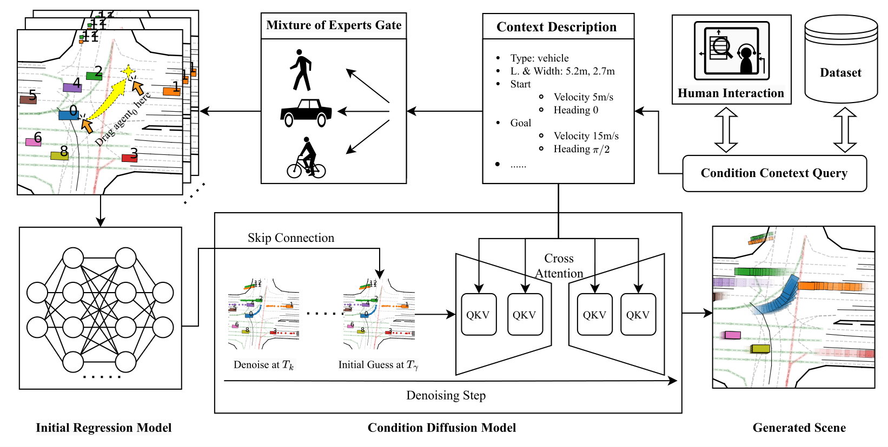
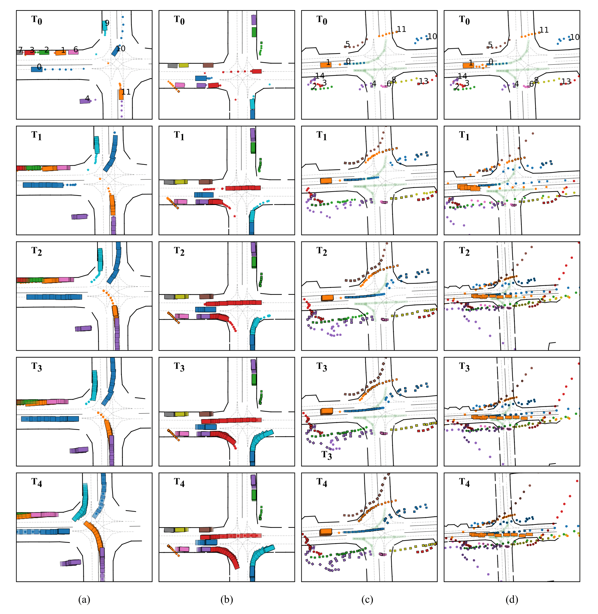

The output is a 9 second long simulation with a sampling interval of 1 second. Please note that the generation time here is a bit long because we generated dynamic gif images for demonstration. Both training and UI code will be open source, please check our code repo for the latest information.
Dragtraffic: Interactive and Controllable Traffic Scene Generation for Autonomous Driving
- 1Sheng WANG
- 1Ge SUN
- 2Fulong MA
- 1Tianshuai HU
- 3Qiang QIN
- 4Yongkang SONG
- 2Lei ZHU
- 2Junwei LIANG
1The Hong Kong University of Science and Technology
2The Hong Kong University of Science and Technology (Guangzhou)
3KTH Royal Institute of Technology
4Lotus Technology Ltd, China
Abstract & Method
The evaluation and training of autonomous driving systems require diverse and scalable corner cases. However, most existing scene generation methods lack controllability, accuracy, and versatility, resulting in unsatisfactory generation results. To address this problem, we propose Dragtraffic, a generalized, point-based, and controllable traffic scene generation framework based on conditional diffusion. Dragtraffic enables non-experts to generate a variety of realistic driving scenarios for different types of traffic agents through an adaptive mixture expert architecture. We use a regression model to provide a general initial solution and a refinement process based on the conditional diffusion model to ensure diversity. User-customized context is introduced through cross-attention to ensure high controllability. Experiments on a real-world driving dataset show that Dragtraffic outperforms existing methods in terms of authenticity, diversity, and freedom.

Case Analysis
The Figure below demonstrates the quality of scenes generated by DragTraffic based on existing data. We use the current frame information in the dataset and the information of the next nine seconds as conditions. The left-turn and right-turn scenes at the intersection where the most interactions occur are respectively shown in columns (a) and (b). These scenes reflect courtesy and competition for right of way among different agents. For example, in (a), Agent No. 9 and Agent No. 1 engage in a fierce competition for the right of way, while Agent No. 0 gives way. This shows that DragTraffic can simulate traffic participants in different situations under highly dynamic and complex traffic intersections to make reasonable, smooth, and realistic future actions, reflecting real-world characteristics. Next, we verify that this capability is not limited to simple log replay in more complex scenarios (c) and (d). We focus on agent No. 1, which is waiting at an intersection for the motorcycle in front to start. However, the movement of a large number of pedestrians around interferes with the decision-making of agent No. 1, which has a conservative driving style. As a result, it continues to watch the movements of pedestrians even when it is already driving to the intersection, leading to the phenomenon of robot freezing, which is common in the fields of autonomous driving and robotics. To address this issue, we design similar scenarios by setting the condition information for agent No. 1 (100 meters in front of it, longitudinal speed of 20m/s, and horizontal speed of -2m/s) to inspire more proactive behavior. As shown in (d), the results generated by DragTraffic are subject to our good scene editing control. Note that we only show the control of agent No. 1 for the convenience of explanation, but in fact, DragTraffic allows us to control the generation of multiple agents simultaneously. Unlike other methods of controlling generation (such as complex optimization constraints and loss design), these manipulation processes only require simple dragging or typing interactions, demonstrating the superiority of this framework in controlling degrees of freedom.

Generation Demonstration
More Animations
The Editing results generated by DragTraffic.
The collected ground truth log.
The condition context of other agents is imposed by the ground truth at the 9th second in the dataset. Note, although the other agents’ condition context are ground truth, they all behaved more reasonably and human-like (for example, agents1, 4, 8 tried to speed up through the intersection, and agent3 was far away from agent0 who was driving on the highway) when agent0 left quickly. Instead of simply copying the log.
Competing for the right to turn at intersections
Waiting at the red light at the intersection.
Motorcycle overtaking from the side of the vehicle.
Forcing vehicles to wait when the light turns green.
Multiple pedestrians cross the zebra crossing.
After parking, walk to the parking lot exit.